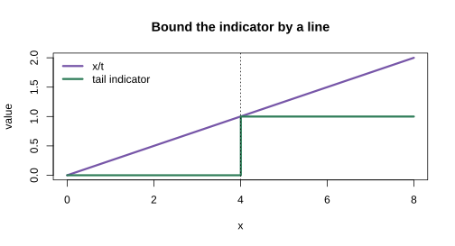
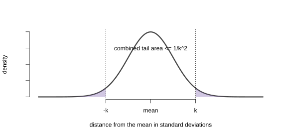

17 The Standard Deviation is Standard
We now know how to calculate two summaries without finding a random variable’s full distribution. Its mean tells us where it is centered. Its variance tells us how far two independent realizations tend to be from each other.
What can those two numbers guarantee if we know nothing about the distribution’s shape? More than you might expect. They cannot tell us the exact probability of every event, but they can limit how much probability can live far from the center. The standard deviation becomes a yardstick that works for every distribution with a finite variance.
Markov’s Inequality
Markov’s inequality says that for a non-negative random variable \(X\) and any \(t > 0\), \[ P(X \ge t) \le \frac{\E[X]}{t}. \]
The usual proof of Markov’s inequality is based on a few simple observations.
- The expectation of the indicator variable \(1_{\ge t}(X)\) is the probability that \(X\) exceeds \(t\), \(P(X \ge t)\).
- If we have some function of \(u\) that’s always larger than \(1_{\ge t}\), i.e., one satisfying \(u_t(x) \ge 1_{\ge t}(x)\) for all \(x\), we know that \(\E[u_t(X)] \ge \E 1_{\ge t}(X)\) for any random variable \(X\). If it’s always larger for non-negative \(x\), then \(\E[u_t(X)] \ge \E[1_{\ge t}(X)]\) for any non-negative random variable \(X\).
- The function \(u_t(x)=x/t\) is such a function.1
Chebyshev’s Inequality
Chebyshev’s Inequality
You’ve just derived a special case of Chebyshev’s inequality. The general statement: for any random variable \(X\) with finite variance, \[ P(|X - \E[X]| \ge t) \le \frac{\Var[X]}{t^2}. \] When you applied Markov’s inequality to \(|\hat\theta - \theta|^2\) above, you got exactly this with \(X = \hat\theta\).
The Standard Deviation is Standard
Write \(\sigma=\sd(X)\). If \(\sigma>0\), then for every \(k>0\), Chebyshev’s inequality says \[ P(|X-\E X|\ge k\sigma)\le \frac1{k^2}. \] If \(\sigma=0\), then \(X=\E X\) with probability one, so there is no positive departure from the mean to bound. The statement contains no density, no named distribution, and no approximation. Two standard deviations means a tail probability no larger than \(1/4\) for every distribution with finite variance. Four standard deviations means no larger than \(1/16\). The exact tail probability changes from one distribution to another; the guarantee does not.
That is what earns the word standard. Once distance is measured in units of \(\sigma\), the same number \(k\) carries the same universal probability guarantee everywhere. The guarantee can be loose, but it cannot be false merely because the distribution has an unfamiliar shape.

Two Moments Give You an Interval
Markov’s Inequality and Interval Estimation
So far, when we’ve calibrated interval estimates using our estimator’s standard deviation, we’ve relied on normal approximation. In effect, we’ve been using a formula for \(P(\lvert\hat\theta - \theta\rvert \le \epsilon)\) that’s accurate when \(\hat\theta\) has a normal distribution and close enough when its distribution is close enough to normal. In this problem, we’re going to think about doing without this reliance on approximate normality.
Let’s consider \(\hat\theta\), an unbiased estimator of \(\theta\) with standard deviation \(\sigma\), so the normal approximation to the distribution of \(\hat\theta-\theta\) has the density \(f_{0,\sigma}(x)\) below.
\[ P\p*{|\hat\theta - \theta| \le \epsilon} \approx \int_{-\epsilon}^{\epsilon} f_{0,\sigma}(x) dx \qfor f_{0, \sigma}(x) = \frac{1}{\sqrt{2\pi}\sigma} e^{-x^2/(2\sigma^2)} \]
The reason we’ve been talking about interval estimators of the form \(\hat\theta \pm 1.96 \sigma\) is that, if this approximation were perfect, these interval estimators would have 95% coverage. That is, it’d be true that \(P(|\hat\theta-\theta| \le 1.96 \sigma) = .95\). And if the approximation is pretty good, we should still expect coverage close to that. But suppose we’re not confident that it is. Markov’s inequality allows us to calibrate interval estimates in terms of our estimator’s standard deviation without any caveats about its sampling distribution being approximately normal. Let’s give it a shot.
Transition: Honest but Loose
The guaranteed 95% interval reaches roughly \(4.5\) standard deviations in both directions. The exact Binomial calculation students already know usually gives a much narrower interval. That comparison creates the next question: can we keep the cheap mean-and-standard-deviation calculation without paying for a uselessly wide universal guarantee?
Normal approximation answers yes. It keeps the same two moments and adds information about shape. The resulting interval is approximate rather than universal, but it is close to the sharp exact Binomial interval. The next chapter puts all three answers beside each other: exact, guaranteed, and approximate.
If you’re not convinced, sketch the two functions on the same axes. Sketching usually helps.↩︎